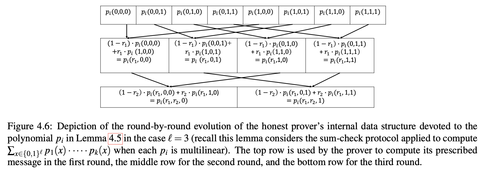
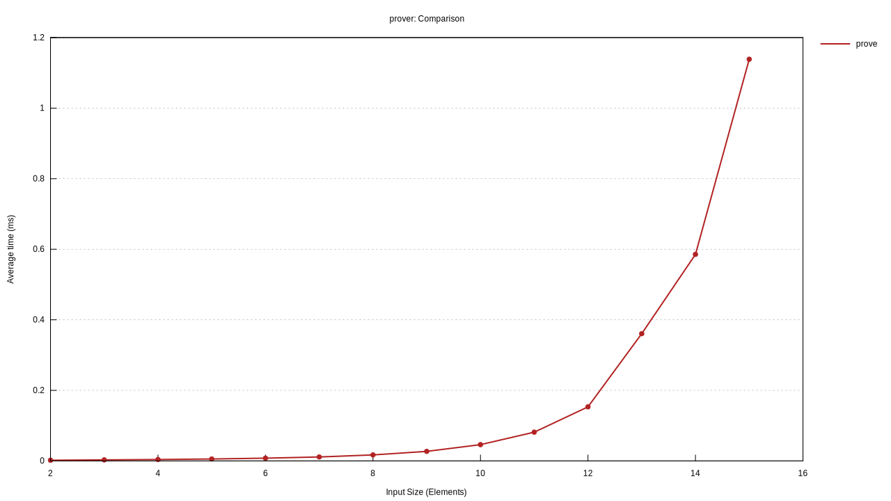
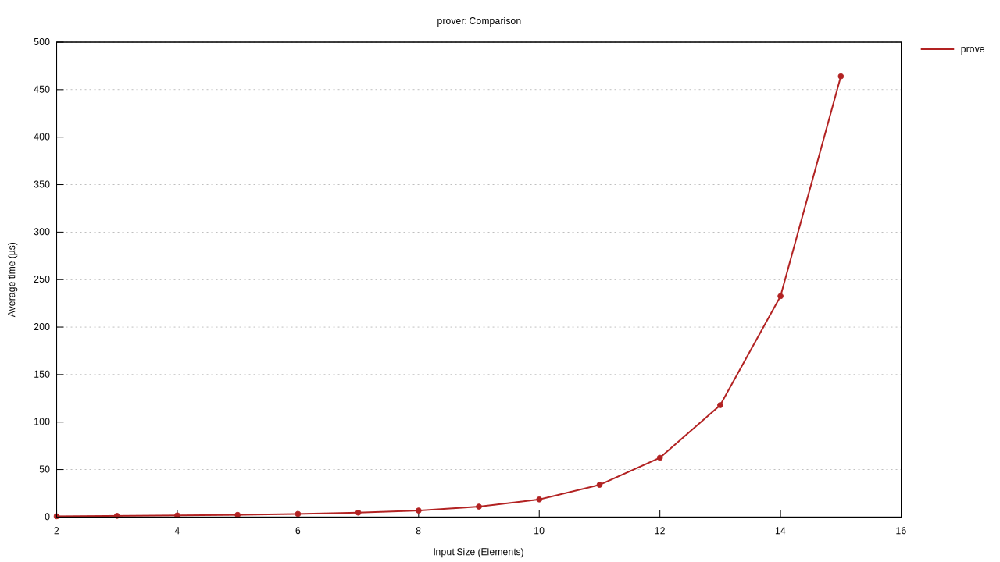

Efficient IP for MatMult
Hi how about some performance? In Chapter 4 the book first introduces a regular MatMult IP that has already been implemented in previous post and then discusses the performance improvements to it. Should be fun, let's dive right in.
The Book first introduces a general method for MatMult IP that gives us a Prover's total runtime of $\mathcal{O}(n^3)$ and then goes on about ideas on shaving that off to $\mathcal{O}(n^2)$.
This less formal discussion illustrates the ideas on the example of a matrix multiplication but then generalizes them in three lemmas. Let's discuss them and what form they take in code.
Lemma 4.3
Suppose that $p$ is an $l$-variate multilinear polynomial over field $\mathbb{F}$ and that $A$ is an array of length $2^l$ such that $\forall x \in \lbrace 0; 1 \rbrace ^l, A[x] = p(x)$.
Then for any $r_1 \in \mathbb{F}$ there is an algorithm running in time $\mathcal{O}(2^l)$, that given $r_1$ and $A$ as input, computes an array $B$ of length $2^{l-1}$ such that $\forall x' \in \lbrace 0; 1 \rbrace ^{l-1}, B[x'] = p(r_1, x')$.
Proof reminds us that the multilinear polynomial $p(x_1,x_2,\cdots,x_n)$ can be expressed via:
$$ p(x_1,x_2,\cdots,x_n) = x_1 \cdot p(1,x_1,\cdots,x_n) + (1 - x_1) \cdot p(0,x_2,\cdots,x_n) $$
The algorithm to compute $B$ iterates over every value $x' \in \lbrace 0; 1 \rbrace ^{l-1}$ and sets
$$ B[x'] \leftarrow r_1 \cdot A[1;x'] + (1 - r_1)\cdot A[0;x'] $$
Lets try to unpack this and understand how that can look like in code.
If we have multilinear extension in the evaluations form where by indexing into an array of evaluations at index $i$ we get the evaluation of the polynomial at point $x = \lbrace 0; 1 \rbrace ^ {\text{num vars}}$ where $i$ encodes $x$ in binary form. Then the above algorithm can be implemented like this (more of a pseudocode, i haven't tested this exact code):
fn fix_variable<F: Field>(a: &[F], r_1: F) -> Vec<F> {
// A has length 2^l and as such B should have lenth 2^{l-1}.
// We can calculate it by a bitwise shift one position
// to the right
let b_length = (a.len() >> 1);
// Then we pre-allocate B with a necessary capacity
let mut b = Vec::with_capacity(b_length);
// Iterate over all indices of B and perform computation as above
for x in 0..b_length {
let b_i = r_1 * a[(x << 1) + 1] + (F::one() - r_1) * a[x << 1];
b.push(b_i)
}
b
}Looks not that bad, the only non-obvious thing here is the indexing into the $A$ array. Remember that to compute $B[x']$ we need to index into a at two points: $A[0;x']$ and $A[1;x']$. Within the bit-representation of $(x_1,\cdots,x_n)$ the first variable $x_1$ corresponds to the Least Significant Bit and so we can construct the indices into $A$ by shifting the index $x'$ one bit right and setting the LSB to $1$ or $0$.
One could imagine a more general implementation of this algorithm where instead of fixing just one first variable $r_1$ in the polynomial any number $i < n$ of first variables could be fixed in place: $A[r_1,\cdots,r_i,x_{i+1},\cdots,x_{n}]$. That can be done by "fixing" one variable at a time:
Compute
$$ A[r_1,x_2,\cdots,x_n] $$
Use the result to compute
$$ A[r_2,x_3,\cdots,x_n] $$
and so on.
This is exactly what the method fix_variables()
of DenseMultilinearExtension is doing. That is neat
and looks like no need to implement this part on our own!.
Lemmas 4.4 and 4.5
Lemmas 4.4 and 4.5 give us the runtime of the Prover for the polynomial of form $g = p_1, p_2, \cdots, p_k$ where $p_i$ are multilinear polynomials. It is certainly useful to dive into the proofs of these lemmas but the main takeaway from them for us is best depicted in this Figure 4.6 that gives us the recipe for what we have to do.

With this figure it easy to see the main idea: in each round of the algorithm it "fixes" the next variable in the multilinear polynomial and uses the result of the previous iteration to do that. As such at each iteration we will get all the necessary evaluations of the polynomial $g(r_1,\cdots,r_i,x_{i+1},\cdots,x_n)$ over a boolean hypercube at Provers step $i$ of the SumCheck protocol.
Modifying the SumCheckPolynomial trait
Recall that in the previous post a generalized trait for the polynomial was introduced. It does not really fit the algorithm described above and even speaking more generally: at each step $i$ of the SumCheck protocol it re-evaluates polynomial $g$ over each fixed variable so far $r_1,\cdots,r_i$ and the boolean hypercube of the values of the variables not fixed so far.
But regardless of the polynomial we are dealing with "fixing" variable, say,
$r_1$ more than once is quite excessive, but it would be "fixed" $n$ times.
This fact could be improved by introducing a method similar to fix_variables
from the DenseMultilinearExtension.
With that going to a univariate polynomial would make sense for only the first variable in the polynomial.
The overall changed trait would look something like this:
pub trait SumCheckPolynomial<F: Field> {
fn evaluate(&self, point: &[F]) -> Option<F>;
fn fix_variables(&self, partial_point: &[F]) -> Self;
fn to_univariate(&self) -> univariate::SparsePolynomial<F>;
fn num_vars(&self) -> usize;
fn to_evaluations(&self) -> Vec<F>;
}This change was added in
206039c
An efficient MatMult algorithm
The change above would actually greatly simplify the previous code for MatMult and it would allow us to write an efficient version of it.
The only remaining non-trivial function would be to_univariate:
fn to_univariate(&self) -> SparsePolynomial<F> {
let domain: GeneralEvaluationDomain<F> = GeneralEvaluationDomain::new(3).unwrap();
let evals = domain
.elements()
.map(|e| {
let f_a_evals = self.f_a.fix_variables(&[e]).to_evaluations();
let f_b_evals = self.f_b.fix_variables(&[e]).to_evaluations();
f_a_evals
.into_iter()
.zip(f_b_evals.into_iter())
.map(|(a, b)| a * b)
.sum()
})
.collect();
let evaluations = Evaluations::from_vec_and_domain(evals, domain);
let p = evaluations.interpolate();
p.into()
}The main idea here is that at step $j$ of the protocol the
polynomial $g(x_1,\cdots,x_n)$ is reduced to $g(x_j,\cdots,x_n)$
by calling fix_variables at each step. This polynomial over
$(x_j,\cdots,x_n)$ is used to utilize GeneralEvaluationDomain values
to interpolate a univariate polynomial $g_j$.
These changes have been implemented in 569a73a
Benchmarking the implementation
With a simple benchmark with criterion we may see a following runtime
of the Prover:

Looks ok, but this implementation is not exactly what the book talks about.
Recycling existing evaluations
If you think about the structure of vector of evaluations of $A[x]$ as in Lemma 4.3 it has these values:
$$ g(0,x_{i+1},\cdots,x_n) $$
$$ g(1,x_{i+1},\cdots,x_n) $$
And we need another point to be able to interpolate a quadratic polynomial, The Book gives us a way to do it:
$$ g(2,x_{i+1},\cdots,x_n) = 2 \cdot g(1,x_{i+1},\cdots,x_n) - g(0, x_{i+1},\cdots,x_n) $$
These can be used as points to run a simple Lagrange interpolation over and save a lot of computation.
fn to_univariate(&self) -> SparsePolynomial<F> {
let two = F::one() + F::one();
let mut evals = [F::zero(); 3];
for i in 0..2usize.pow(self.num_vars() as u32) {
if i & 1 == 1 {
evals[1] += self.f_a[i] * self.f_b[i];
evals[2] +=
(two * self.f_a[i] - self.f_a[i - 1]) * (two * self.f_b[i] - self.f_b[i - 1]);
} else {
evals[0] += self.f_a[i] * self.f_b[i];
}
}
let points = vec![
(F::zero(), evals[0]),
(F::one(), evals[1]),
(F::one() + F::one(), evals[2]),
];
interpolate_quadratic_poly(&points)
}Running a benchmark on this code will show improved results:

prover/prove/12 time: [62.123 µs 62.203 µs 62.397 µs]
thrpt: [192.32 Kelem/s 192.92 Kelem/s 193.16 Kelem/s]
change:
time: [-59.466% -59.269% -59.065%] (p = 0.00 < 0.05)
thrpt: [+144.29% +145.51% +146.71%]
Performance has improved.This has been implemented in 42cf306